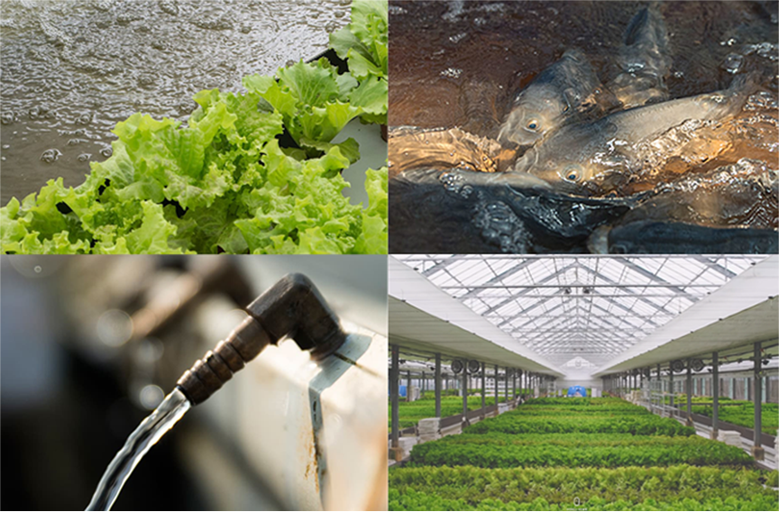

<? include "inc_header.html" ?>
<? include "inc_submenu2.html" ?>
        <section>
                <div id="sub_subtitle">
                    <p>채소<br /><span>자연의 섭리를 따르는 농업방식</span></p>
                </div>

            <div id=sub_ne_title>
                <ul>
                    <li> </li>
                    <li>본 채소<span>는 오로지</span> 아쿠아포닉스<br /><span>농법으로 자라났습니다.</span></li>
                    <li><span>아쿠아포닉스란?</span><br />합성비료 대신 물고기의 배설물을 영양분으로 채소들이 자라고,<br />채소가 정화해준 물에서 다시 물고기가 살아가는 농업방식 입니다.</li>
                    <li></li>
                    <li>채소와 물고기가 공생하며 건강하게 자라는 자연 생태계를 닮은 수경재배 ICT 농장입니다.</li>
                </ul>
            </div>
            <div id="sub_ne_img">
                <ul>
                   <li></li>
                </ul>
            </div>
            <div class="clear"> </div>
            <div id="store">
                <ul>
                    <li><a href="#"><span>스토어</span>에서<span> 신선한 채소</span> 만나기</a></li>
                </ul>
            </div>

        </section>
        <div class="clear"> </div>

<? include "inc_footer.html" ?>